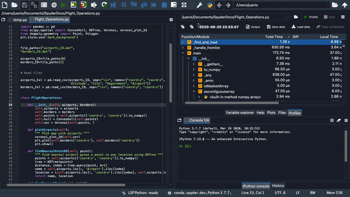

Profiler¶
The Profiler pane recursively determines the run time and number of calls for every function and method called in a file, breaking down each procedure into its smallest individual units. This allows you to easily identify the bottlenecks in your code, points you toward the exact statements most critical for optimization, and measures the performance delta after followup changes.

Running the Profiler¶
You can browse for a file using the open button to the right of the Profiler’s path box (top left of the pane), which will run profiling over this file automatically.

You can manually enter the path in the pane’s path box and then run the analysis on the file by pressing Profile in the Profiler pane.
You can also run profiling for the file that is currently open in the Editor by clicking in the menu bar, or by using a configurable shortcut (F10 by default).

If you’d like to cancel an in-progress run, click the Stop button in the top right, and if profiling fails for any reason, the Output dialog will be displayed, indicating the error that occurred.
By double-clicking an item in the Profiler, you will be taken to the file and line in the Editor where it was called.
You can increase the number of levels displayed for a particular object by clicking the dropdown arrows to the left of the name, and expand/collapse all the items with the buttons in the top left.

By clicking the dropdown or press the Down Arrow key in the filename field, you can recall paths of previous profiled files.

Finally, you can save the data for a given run to disk as a file with the .Result extension using the Save data button.
This can be loaded to compare with a previous run of the same file using the Load data button.
To remove the loaded data, click the Clear comparison button.

Interpreting the results¶
Results are broken down by function/method/statement, with each sub-element listed hierarchically under the top-level item that called them.
Total Time is that taken by the specified item and every function “underneath” (i.e. called by) it, while Local Time only counts the time spent in the particular callable object’s own scope.
The Calls column displays the total number of times the specified object was called at that level inside its parent calling function (or within the __main__ scope, if a top-level object).
Finally, the numbers in the Diff columns for each of the three appear if a comparison is loaded, and indicate the deltas between each measurement.

For example, suppose you ran the Profiler on a file calling a function sleep_wrapper() that in turn called the sleep() function, and the sleep_wrapper() function took a total of 3.66 ms to run, with 3.64 ms of that spent executing the sleep() function inside it.
Therefore, if sleep() called nothing else itself, its Total Time and Local Time would both be identical, at 3.64 ms.
Meanwhile, Total Time for sleep_wrapper() would be 3.66 ms, but Local Time only 0.02 ms as the rest was spent inside the sleep() function it called.
Profiler Plugins¶
There are two additional plugins that you can install to enable other types of profiling in Spyder. First, Spyder Line Profiler allows you to benchmark each line of your code individually. To learn more, visit the spyder-line-profiler git repository.

Second, Spyder Memory Profiler measures the memory usage of your code. For more information, go to the spyder-memory-profiler git repository.